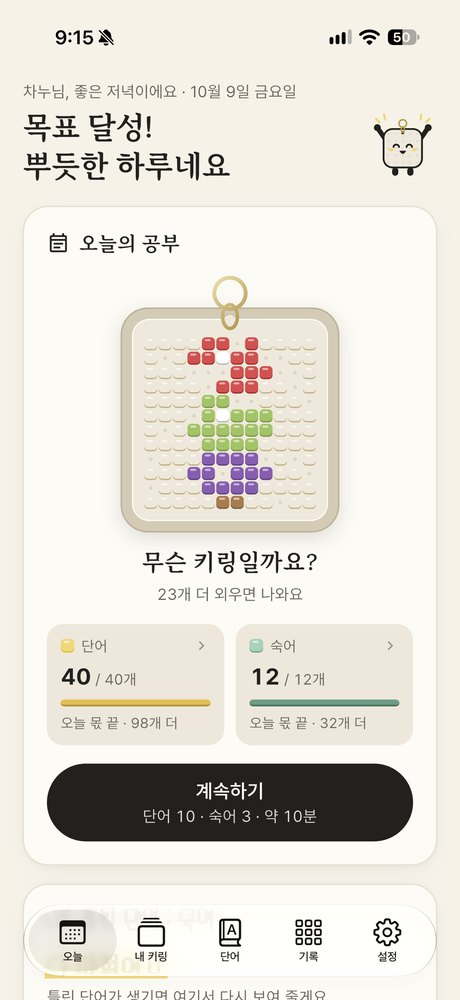
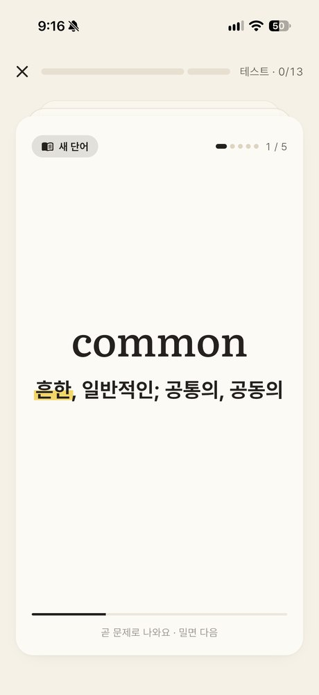
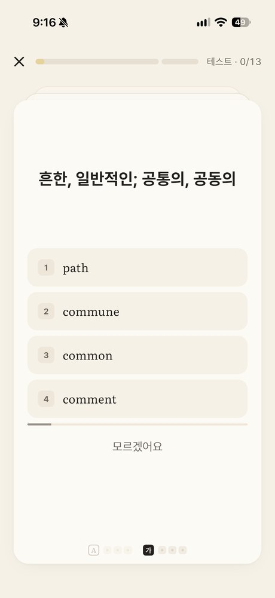
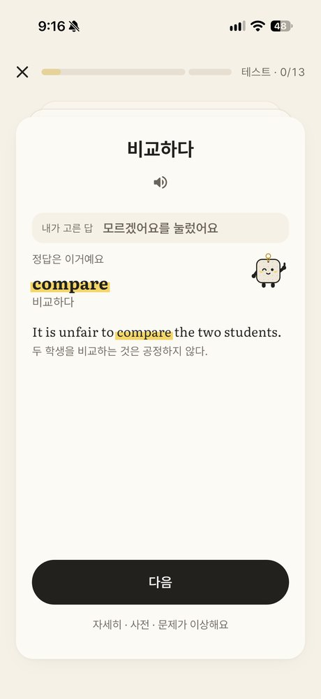
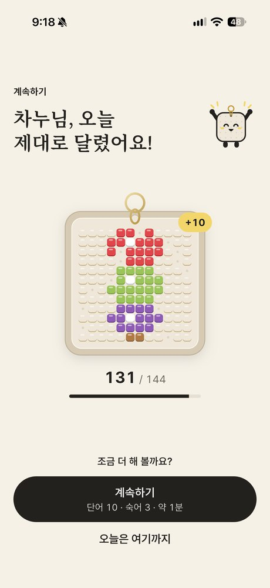
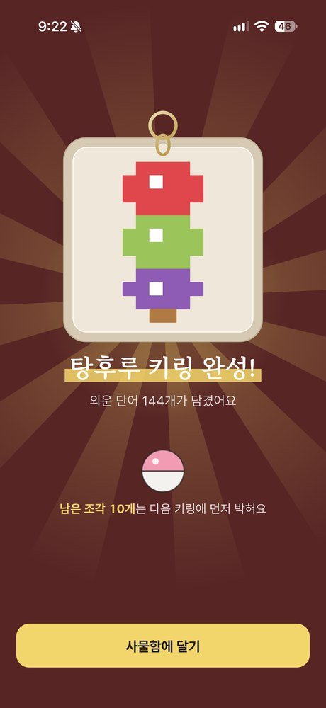
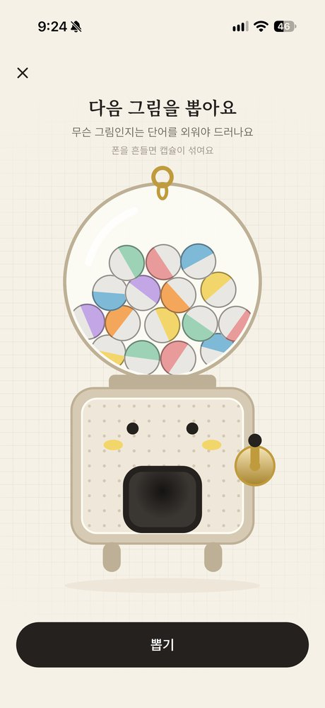
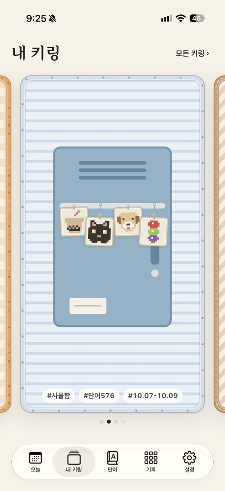
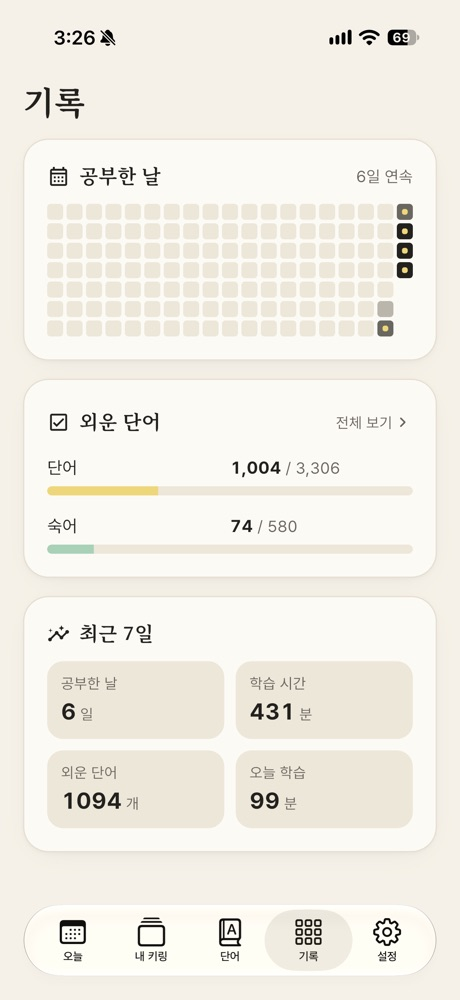

이렇게 외워요
단숙이는 수능 기본 어휘 3,000개와 기출 · 기초 보충 단어 306개, 숙어 580개를 외우는 iPhone 앱이에요. 회원가입 없이 바로 시작하고, 모든 공부는 기기 안에서 이루어져요.









옆으로 넘겨 보세요 →
단숙이는 고등학생 아이의 단어 공부를 돕고 싶었던 아빠가 직접 만들었어요. 아이가 매일 쓰는 앱이라 광고도, 가입도 넣지 않았어요.
자주 묻는 질문
어떤 단어가 나오나요?
교육부 고시 교육과정 기본 어휘 3,000개(2015 · 2022 개정, 설정에서 고를 수 있어요)에, 최근 수능 · 모의평가에 두 번 이상 나왔지만 기본 어휘에 없는 기출 보충 286개, 요일 · 월 같은 기초 보충, 그리고 숙어 580개가 나와요.
언제 '외운 단어'가 되나요?
한 단어를 영어 → 뜻, 뜻 → 영어로 각각 3번 연속 맞히면 외운 거예요. 틀리거나 4초를 넘기면 그 방향은 처음부터 다시 세요. 카드 아래 A · 가 옆에 조각이 하나씩 끼워지는 게 그 표시예요. 처음 나온 단어를 두 방향 모두 바로 맞혔다면 이미 알아요를 눌러 바로 외운 단어로 넣을 수도 있어요.
왜 4초 안에 맞혀야 하나요?
시험에서 단어는 읽자마자 뜻이 떠올라야 해요. 오래 고민해서 맞힌 건 아직 내 것이 아니라서, 4초 안에 맞힌 것만 외운 것으로 세요. 숙어는 문장을 읽어야 해서 시간이 넉넉해요.
키링은 어떻게 모아요?
캡슐 머신 손잡이를 두세 바퀴 돌려 키링 도안을 뽑아요. 단어를 외울 때마다 판에 조각이 하나씩 끼워지며 그림이 드러나요. 144개를 외우면 키링이 완성되고, 내 키링 탭의 카드에 하나씩 달려요. 카드마다 그 물건다운 테두리가 있고, 다 차면 새 오브제 카드가 열려요. 키링은 돈이 아니라 공부로만 뽑아요.
앱을 지웠다가 다시 깔면 기록이 사라지나요?
아니요. 공부 기록은 본인 iCloud에 자동으로 저장돼요. 같은 Apple 계정으로 다시 설치하면 처음 열 때 기록을 알아서 불러와요. 설정 › 기록 › iCloud 자동 저장에서 마지막으로 저장한 시각을 볼 수 있어요.
인터넷 없이도 쓸 수 있나요?
네. 단어, 문제, 발음, 기록이 모두 기기 안에 있어요. 발음도 기기 안의 AI 목소리가 만들어요. 인터넷은 iCloud에 기록을 저장하고, 오류 · 이용 통계를 보낼 때만 써요.
틀린 단어는 어떻게 다시 보나요?
오늘 탭의 틀린 단어 · 숙어와 자주 틀린 단어 · 숙어에서 다시 풀 수 있어요. 문제 앞에 카드로 먼저 한 번 보여 줘요. 잠금 화면 · 홈 화면 위젯이 틀린 단어를 보여 주고, 다 맞히면 자주 틀린 단어를 보여 줘요. 매일 알림으로도 챙겨 드려요.
하루에 몇 개씩 공부하나요?
처음엔 단어 40개 · 숙어 12개예요. 설정에서 바꿀 수 있고, 오늘 몫을 다 하면 계속하기로 더 할 수 있어요. 하루 쉬어도 끼운 조각은 빠지지 않아요.
문제 해결
- 발음이 들리지 않아요: 단숙이 발음은 무음 모드여도 나와요. 그래도 안 들리면 음량이 0인지, 블루투스 이어폰에 연결돼 있는지 확인해 주세요. 설정에서 '발음 자동 재생'이 꺼져 있어도 단어 옆 스피커를 누르면 들을 수 있어요.
- 발음이 처음에 조금 늦어요: 기기 안에서 목소리를 만드느라 그래요. 한 번 만든 소리는 저장돼서 다음부터는 바로 나와요.
- iCloud 저장이 안 된대요: 설정 앱에서 Apple 계정에 로그인되어 있고 iCloud가 켜져 있는지 확인해 주세요. 인터넷이 연결되면 다음에 앱을 닫을 때 다시 저장해요.
- 위젯에 단어가 안 보여요: 앱을 한 번 열면 위젯이 새로 그려져요.
- 다시 설치했더니 알림이 안 와요: 앱을 열면 알림을 다시 물어봐요. 그때 허용해 주세요. 이미 거절했다면 설정 앱 › 단숙이 › 알림에서 켤 수 있어요.
개인정보 처리방침
'단숙이'(이하 '앱')는 이용자의 개인정보를 소중히 다루며 「개인정보 보호법」 등 관련 법령을 지켜요. 앱은 회원가입이 없고, 이름 · 이메일 · 전화번호를 수집하지 않으며, 광고를 넣지 않아요. 앱을 더 낫게 만들기 위해 개인을 알아볼 수 없는 이용 통계와 오류 정보만 모아요.
1. 처리하는 정보
- 공부 기록: 푼 문제와 맞힘 여부, 걸린 시간, 외운 단어, 뽑은 키링, 공부 설정. 기기 안에 저장돼요.
- 부르는 이름(선택): 앱이 불러 줄 별명. 입력한 경우에만 기기 안에 저장돼요.
- 알림 시간: 공부 알림을 켠 경우 정한 시각과 요일. 알림은 기기 안에서 예약돼요.
- 신고 내용: 문제 화면에서 신고한 단어와 이유. 기기 안에 저장되며 앱을 만든 사람에게 자동으로 보내지지 않아요.
- 이용 통계: 공부를 시작 · 마친 횟수, 푼 문제 수, 외운 단어를 며칠 뒤 다시 맞혔는지(맞힘 여부와 지난 날수만), 캡슐 뽑기 · 키링 완성 같은 앱 사용 기록과 앱 설치마다 만들어지는 임의의 식별자, 기기 모델 · OS 버전 · 국가 · 언어. 외운 단어나 이름 같은 내용은 보내지 않아요.
- 오류 정보: 앱이 멈추거나 오류가 났을 때의 기록(오류가 난 코드 위치, 기기 모델 · OS 버전 · 메모리 상태 등).
- 문의 내용: 설정 › 문의하기로 직접 보낸 경우에만, 쓴 내용 · 적어 준 답장 받을 곳(선택) · 앱 버전 · iOS 버전 · 기기 모델. 이름이나 공부 기록은 함께 가지 않아요.
2. 이용 목적
- 오늘 공부할 단어를 고르고, 외운 정도와 기록 · 통계를 보여 주기 위해
- 앱을 다시 설치하거나 기기를 바꿨을 때 공부 기록을 되살리기 위해(iCloud)
- 앱 품질 개선과 오류 해결(이용 통계 · 오류 정보)
- 문의에 답하고 틀린 뜻 · 예문을 고치기 위해(문의 내용)
3. 보관과 파기
- 기기의 정보: 앱을 삭제하면 함께 지워져요.
- 문의 내용: 답장과 수정을 마치면 지워요.
- 이용 통계 · 오류 정보: Google Firebase의 보관 기간(이용 통계 최대 14개월, 오류 정보 90일)이 지나면 자동으로 지워져요.
- iCloud의 백업: 이용자 본인의 iCloud 계정 안, 이 앱만 볼 수 있는 비공개 공간에 기록 파일 하나로 저장돼요. iPhone 설정 › Apple 계정 › iCloud › 저장 공간 관리에서 언제든 지울 수 있어요.
4. 외부 전송과 국외 이전
- Apple Inc.(미국): 공부 기록 백업을 이용자 본인의 iCloud(CloudKit 비공개 데이터베이스)에 저장해요. 앱을 만든 사람은 이 데이터를 볼 수 없어요. iCloud에 로그인하지 않았으면 전송되지 않아요.
- Google LLC(미국): 이용 통계(Firebase Analytics)와 오류 정보(Firebase Crashlytics)를 처리해요. 앱을 쓰는 동안 인터넷으로 전송되며, 개인을 알아볼 수 있는 정보는 보내지 않아요.
- Slack Technologies(미국): 문의하기로 보낸 내용을 앱을 만든 사람이 읽고 답장하기 위해 Slack 메시지로 받아요. 보낼 때만 전송되며, 답장을 마치면 지울 수 있어요.
- 발음 소리는 기기 안의 AI 모델이 만들어요. 단어나 예문을 외부 음성 서비스로 보내지 않아요.
- 문제 화면에서 사전 보기를 누르면 네이버 영어사전이 브라우저로 열려요. 그 사이트의 이용에는 그 사이트의 방침이 적용돼요.
5. 아동의 개인정보
앱은 이용자를 식별할 수 있는 정보를 수집하지 않으므로, 만 14세 미만 이용자도 법정대리인 동의 절차 없이 쓸 수 있어요.
6. 이용자의 권리
- 공부 기록은 앱을 삭제하거나 iCloud 저장 공간 관리에서 지울 수 있어요.
- 알림 권한은 iPhone 설정에서 언제든 끌 수 있어요.
- 이용 통계 · 오류 정보의 삭제를 원하면 아래 이메일로 요청해 주세요.
7. 문의
- 개인정보 관련 문의: fastchanoo@gmail.com